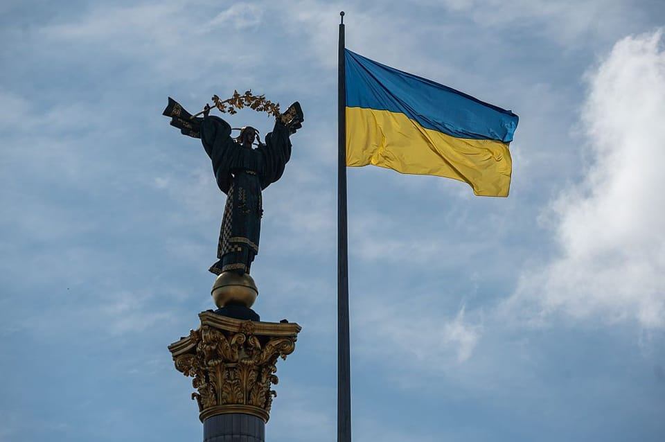

世界苦茶08月25日新闻 | 24条 | 北京上海繼續放鬆限購政策

北京上海繼續放鬆限購政策 | 英國討論給全民chatGPT Plus | 朝鮮士兵越界韓軍開槍 | 盧秀燕拒絕擔任國民黨主席
SUBSTACK
每日三條新聞解析
苦茶数据
美元兑人民币：7.15（昨日7.17，前日7.17）
美元兑日元：147.34（昨日146.87，前日148.70）
上证指数：3849（昨日3825，前日3796）
标普500指数：休市（昨日6466，前日6370）
比特币：112553（昨日114880，前日115785）
布伦特原油：67.75（昨日67.73，前日67.63）
中国新闻
• 大连科院曝欠薪风波 ：中国大连科技学院被曝光拖欠全员工资，被执行总金额超过35亿人民币。校方回应称，现已发放工资。据深圳新闻网报道，“大连科技学院全员停发工资，开学面临停摆”的贴文在中国网络上流传。在贴文评论区中，一封落款为“大连科技学院工会委员会”的《致全体教职员工一封信》称，在未收到任何法律文书和通知的情况下，学校各类相关账户被大连市中级人民法院冻结，致使7月工资未能如期发放。学校工会将为全体教职员工发放临时困难补贴和慰问补贴。
• 胖东来招聘吸引13万人 ：中国知名商超品牌胖东来“三胖”店星期六开启拟招900人的岗位招聘，当日吸引13.2万人注册，大量网民涌入导致页面一度崩溃。胖东来创始人于东来星期天对此回应说，胖东来为了公平己经尽最大努力了，“想开点，开心最重要”。综合21财经客户端、九派新闻和南财快讯报道， 新乡胖东来“三胖”店开业拟招聘900名新员工，其中边防退伍军人计划录用200人；刑释人员计划录用20人，此次招聘岗位仅限河南地区人员投递。收取简历与录用人数比例为3:1。招聘报名系统数据显示，当日系统注册信息13.2万人，其中8.3万人完成基础信息投递。
• 人民日报批赖清德边界论 ：中国大陆官媒以两个故事论述两岸无国界，并批台湾总统赖清德有坐实两岸之间边界的贼心和贼胆，但完全没有条件、也承受不了做贼的惨痛代价。中共中央机关报《人民日报》第四版星期天刊登署名为全国台湾研究会会长汪毅夫的文章《两岸之间无国界》。文章通过两个近代故事论述中国大陆和台湾之间无国界，“是一个不用说明的明白的事实”。文章先是引述《台湾大事纵览（1979—1993）》的记载指，1981年3月4日，台北地方法院宣判几名涉嫌“与大陆走私”的渔民无罪，理由是大陆和台湾无国界，不能构成走私罪。
• 香港回应冒牌饮用水风波 ：香港发生冒牌饮用水风波，对于港人对大陆饮用水失去信心的说法，香港官员称，这是无谓揣测。据网媒“香港01”报道，香港财经事务及库务局局长许正宇星期天说，专责小组会尽快找出制度上的不足与疏漏，早日提出人员培训方案，保障公共利益及公帑。他说，无论政府还是市场的检测，均证明采购的饮用水微生物与金属元素方面达标，“不存在香港与内地质素不一”。
• 柬埔寨国王太后抵京访华 ：柬埔寨国王诺罗敦·西哈莫尼、太后诺罗敦·莫尼列·西哈努克星期六抵达中国北京。据新华社报道，早前消息披露，诺罗敦·西哈莫尼和罗敦·莫尼列·西哈努克将访问中国，并参加中国纪念抗战胜利80周年大会。中国今年纪念抗日战争胜利暨世界反法西斯战争胜利80周年，将举行一系列纪念活动，其中最受关注的是9月3日在北京天安门广场举行的阅兵式，届时中共总书记习近平将检阅部队并发表讲话。
亚太印太新闻
• 马来西亚再援巴勒斯坦 ：马来西亚首相安华宣布，马来西亚将再捐出一亿令吉，以援助深陷战火与饥荒的巴勒斯坦人民。综合报道，安华星期天晚在吉隆坡独立广场的特别演说中指出，政府早在2023年已拨出一亿令吉援助巴勒斯坦，如今再度追加，体现马来西亚对巴勒斯坦事业的一贯支持。他呼吁国人珍惜来之不易的和平与独立，并以此为鉴，守护全民的自由与安宁。在谈及加沙局势时，安华措辞强烈，直斥以色列政府制造“人祸”饥荒。他说，援助物资被拦阻在边境，食物药品任其腐烂，导致无数平民死于饥饿或在寻求援助时被射杀。
• 缅甸百年高架桥被炸 ：缅甸执政军政府星期天说，一座建于殖民时期、曾是世界最高铁路栈桥的桥梁被反政变武装团体“炸毁”。法新社报道，军政府发言人佐敏吞在向媒体发布的视频声明中透露，德昂民族解放军和人民防卫军“炸毁”了谷特高架桥。谷特高架桥高出峡谷102米，是缅甸最高的桥梁，连接曼德勒和掸邦北部。
• 朝鲜士兵越界韩方开枪 ：联合国军司令部证实，30多名在韩朝非军事区北方一侧作业的朝鲜军人，8月19日曾越过军事分界线。韩联社报道，就朝鲜前一日称“韩军向正在军事分界线附近作业的朝军进行警告射击”一事，联合国军司令部星期天在答复韩联社提问时说，调查结果显示，韩军多次广播告知朝军越界，但未获回应，随后实施警告射击，迫使朝军退回北侧。联合国军司令部还表示，朝鲜方面提前通报在军事分界线附近进行作业，事前通知和沟通有助降低误判和偶发冲突风险。司令部已做好与朝方就包括此次事件在内的潜在问题进行对话的准备。
• 卢秀燕拒任国民党主席 ：台湾绿营针对在野31名国民党立委的大罢免全部失败后，国民党主席朱立伦星期六宣布交棒，恳请台中市长卢秀燕接任。卢秀燕星期天回应说，不会参选国民党主席。根据联合报报道，卢秀燕受访时说：“在台中经济最困难的时候，妈妈会留在家，会说到做到，所以无法参选国民党党主席”。卢秀燕感谢朱立伦劳苦功高，以及他的好意与抬爱，表示国民党726与823证明了团结才能胜利，大家分工、分进合击。
• 朝鲜试射新型防空导弹 ：朝鲜导弹总局8月23日进行旨在检验经改良的两种新型防空导弹性能的试射，金正恩到场观摩。朝中社报道，试射结果显示新型防空导弹系统对无人攻击机和巡航导弹等各种空中目标的快速反应作战能力优异，其运行及反应方式采用独创的技术。经改良的两种导弹弹头技术特点非常适合消灭各种空中目标。分析指出，作为派兵援俄的回报，朝鲜从俄罗斯方面获取相关技术。朝鲜2024年4月试射“流星1-2”新型防空导弹，2025年3月声称成功试射近期投入量产的新型防空导弹。朝鲜在韩国总统李在明开启日美出访之际进行试射，可能针对的是正在进行中的韩美“乙支自由护盾”联演。韩军23日未发布朝鲜射弹消息。
科技新闻
• Open AI 和英国讨论了为全国提供 ChatGPT Plus 的协议： OpenAI 联合创始人 Sam Altman 与英国科技大臣 Peter Kyle 讨论了一项可能达成的协议，旨在让英国全国人民都能享受这款人工智能工具的优质使用权。据两位直接了解此次会面的消息人士称，这个想法是在旧金山举行的一场关于 OpenAI 与英国合作机会的广泛讨论中提出的。Kyle 从未真正认真对待过这个想法，尤其是因为它可能耗资高达 20 亿英镑。但尽管人们对一些聊天机器人回复的准确性以及对隐私和版权的影响存在担忧，此次会谈仍显示出这位科技大臣对 AI 领域的热情。英国科技部对此表示，尚未提出任何允许英国居民使用 ChatGPT Plus 的提议，也没有与其他部门讨论过此事。 （翻評：這個太有想象力了。）
• Telegram创始人批法国调查 ：Telegram创始人杜罗夫称，一年前，法国警方拘留了我四天，因为一些我从未听说过的人使用其平台协调犯罪。因用户行为逮捕大型平台CEO不仅史无前例，在法律和逻辑上都很荒谬。一年后，针对我的 “刑事调查” 仍在艰难地寻找我或Telegram的任何过错。讽刺的是，我被逮捕是由于法国警方自身的错误： 在2024年8月前，他们无视法国及欧盟法律，从未通过必要的法律程序Telegram发送任何查询。这次离奇逮捕发生一年后，我仍必须每14天返回法国一次，且看不到上诉日期。目前为止我被捕的唯一成果，就是对法国作为自由国家形象造成巨大损害。 （翻評：对法国作为自由国家形象造成巨大损害...好像還好。）
财经新闻
• 北京、上海先后放松住房限购政策： 北京8月8日宣布，符合该市商品住房购买条件的居民家庭在五环外购买商品住房不限套数。上海25日宣布，符合条件居民家庭在外环外购房不限套数。两地还加大了住房公积金贷款的支持力度。
• 印度拟下调消费品GST ：在美国关税压力加剧之际，印度总理莫迪宣布计划下调日常消费品的商品与服务税，为民众减轻数百亿美元的税收负担，并提振国内需求。法新社报道，美国总统特朗普威胁将对印度的进口关税从25%提高至50%，以惩罚新德里持续购买俄罗斯石油，指责其为莫斯科对乌克兰的战争提供资金。此举令印度经济前景蒙上阴影，出口商纷纷警告订单锐减与就业流失的风险。新德里批评美方举措“不公平、不合理”，但也在积极寻求缓冲措施。
• 中国与上合组织贸易增长 ：中国今年1至7月与上海合作组织其他成员国货物贸易额达2931.8亿美元，同比增长1.8%。根据中国央视网报道，近五年来，中国与上合组织其他成员国贸易额接连突破3000亿、4000亿、5000亿美元，并于2024年达到5124亿美元，创历史新高，同比增长2.7%。其中，新业态新领域快速发展，2024年，中国自其他成员国跨境电商进口同比增长34%。
• 加拿大拟与美重启贸易谈判 ：在大幅取消对美报复性关税后，加拿大表示有信心与美国重启谈判并达成新的贸易协议。彭博社报道，负责加美贸易事务的加拿大部长勒布朗星期五接受采访时说：“我们乐观地认为，可以与特朗普总统及其政府合作，谈成一份对两国经济都有利的协议。”他透露与美国商务部长卢特尼克保持着沟通，加拿大总理卡尼也已与特朗普直接交流。
俄乌战争
• 俄乌交换146名战俘 ：俄罗斯国防部与乌克兰总统办公室称，在阿拉伯联合酋长国的斡旋下，俄乌双方在星期天各释放146名战俘。路透社报道，俄国防部称，获释的俄方人员已被转送至白俄罗斯，接受心理与医疗援助。另有八名库尔斯克州居民也由乌方向俄方移交。乌克兰总统泽连斯基则在即时通信平台Telegram上确认交换完成，但未公布具体人数。他发布了多张获释人员的照片，并指其中多数人自2022年俄军入侵以来便一直被关押，包括一名在战事爆发后一个月被俘的记者。
• 加拿大再援乌克兰10亿加元 ：乌克兰总统泽连斯基星期天与加拿大总理卡尼共同庆祝独立日。卡尼说，乌克兰将从下个月宣布的一揽子计划中获得超过10亿加元的军事援助。路透社报道，俄罗斯全面入侵乌克兰已有三年半。美国总统特朗普正敦促两国达成和平协议，泽连斯基面临着来自华盛顿的压力，要求其向俄罗斯做出让步。泽连斯基在基辅索菲亚广场一座11世纪大教堂前说：“我们都在努力确保这场战争的结束意味着乌克兰永远获得和平，这样我们的子孙后代就不会再遭受战争或战争威胁。”
国际新闻
• 以色列持续轰炸加沙 ：以色列飞机和坦克本周末夜间轰炸加沙城东郊和北郊，摧毁了建筑物和房屋。与此同时，以色列领导人誓言将继续推进对加沙城的攻势。路透社报道，目击者称，在泽图恩和谢贾亚，爆炸声持续了一夜。坦克炮击附近萨布拉街区的房屋和道路，北部城镇贾巴利亚的多栋建筑被炸毁。爆炸方向的火光照亮了天空，引发恐慌，一些家庭被迫逃离。另一些人则表示，他们宁愿死也不愿离开。
• 以色列空袭胡塞目标 ：以色列国防军8月24日袭击也门胡塞武装在首都萨那地区的军事目标，造成至少2人死亡、5人受伤。以军说，袭击目标包括总统府所在的军事基地、发电厂以及燃料储存基地，这些设施被用于胡塞武装的军事活动。袭击是为了回应胡塞武装对以色列及其平民的反复袭击。胡塞武装控制的马西拉电视台报道，萨那多个地点当天遭到以军空袭，包括石油公司和发电站。胡塞武装一名军官说：“防空部队成功阻止了大多数参与侵略的以色列战机，并迫使其撤离。”当地居民称，空袭导致一家石油公司大楼周边起火，该地点有加油站和液化气罐区。萨那市中心总统府附近地区以及南部一处发电站冒起浓烟。
• 澳洲35万人挺巴勒斯坦 ：数十万澳大利亚人星期天参加全国各地举行的支持巴勒斯坦的集会。路透社报道，巴勒斯坦行动组织表示，澳洲各地星期天举办40多场抗议活动，其中包括悉尼、布里斯班和墨尔本等州首府的大规模集会。该组织说，全国约有35万人参加集会，其中布里斯班约有5万人，但警方估计人数接近1万人。警方尚未估计悉尼和墨尔本的集会人数。
• 默茨稱德国福利国家“已无力维持”： 这位德国总理呼吁进行福利改革，这可能使他与社民党发生冲突。“我们今天的福利国家已无力再依靠我们经济产出来维持，”默茨在奥斯纳布吕克市表示。由于成本上升和联邦预算缺口，执政联盟各方已同意改革涵盖医疗保险、养老金和失业救济金的社会保险体系。总理承认，削减社会福利对中左翼社民党来说并非易事，但他呼吁两党合作。与此同时，他强调，“在我领导下，本届联邦政府不会提高德国中型企业的所得税”，尽管社民党副总理拉尔斯·克林贝尔此前曾表示，不排除对中高收入者增税的可能性。
• 澳洲推举措应对住房危机 ：澳大利亚政府宣布，将推出一系列举措加快住房建设，以应对持续恶化的全国性住房危机。彭博社报道，据澳政府星期六发布的声明，首批措施包括加速审批逾2.6万套新住房项目，并冻结进一步修改建筑法规，以加快核准进度。政府还计划引入人工智能，协助落实相关改革。住房部长奥尼尔说：“在澳大利亚建房太难了。在这场酝酿已久的住房危机中，我们希望建筑商专注于建设高质量的未来住宅，而不是浪费精力研究新一套规章制度。”
• 哈佛调整架构应对压力 ：在数十亿美元科研经费岌岌可危之际，哈佛大学虽尚未与特朗普政府达成协议，却已提前采取多项举措，从更名多元化办公室到撤换学术负责人，其中不少措施与白宫要求不谋而合。《纽约时报》报道，哈佛校长加伯已明确拒绝部分改革要求，批评相关要求过度干涉、甚至违宪，特别是涉及学校的招生与聘任自主权。但哈佛校方仍采取了一些与政府意向一致的举措：从撤销多元化办公室，到更换项目负责人，逐一勾选了白宫的“清单”。在特朗普政府压力下，哈佛已对校园架构作出调整。今年4月，校方将“公平、多元、包容与归属办公室”更名为“社区与校园生活办公室”，随后又撤下跨文化与种族关系基金会及相关少数群体学生办公室的网站，并宣布整合为新的单一中心。